Research explained
Explore the measurements and models behind my papers through animations and published figures.
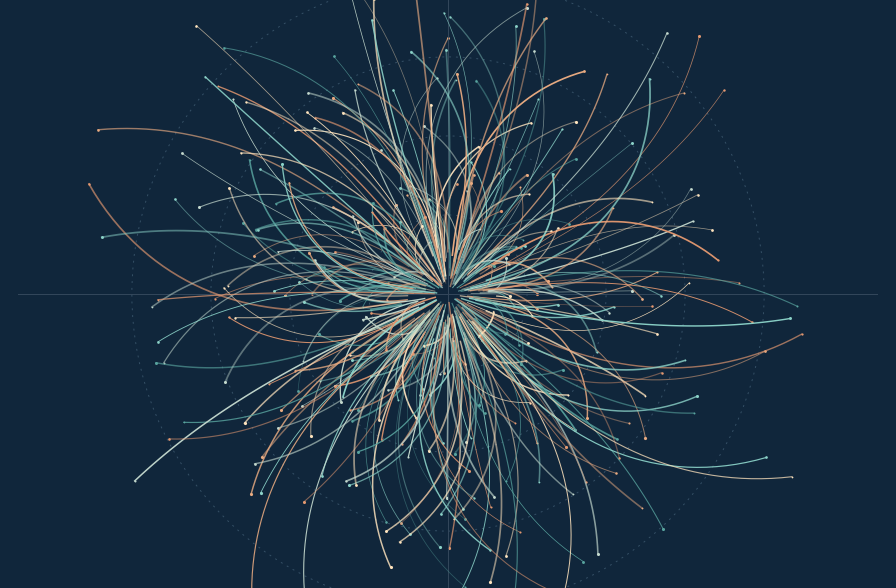
Radial flow in heavy-ion collisions is collective
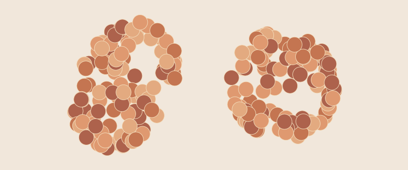
High-energy collisions image the deformation and triaxiality of uranium-238

Ultra-central collisions separate geometrical and intrinsic momentum fluctuations
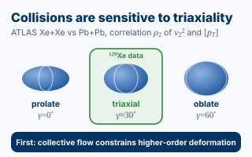
Flow–momentum correlations reveal the triaxial shape of xenon-129
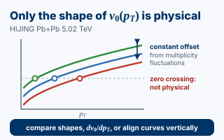
Only the shape of v₀(pT), not its zero crossing, carries physical information
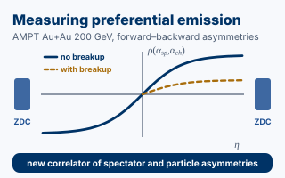
A spectator–particle asymmetry correlator constrains preferential emission and spectator breakup
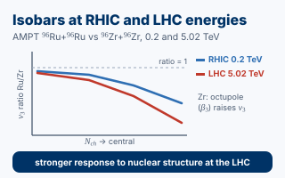
Independent sources of eccentricity explain the modest energy dependence of isobar flow ratios
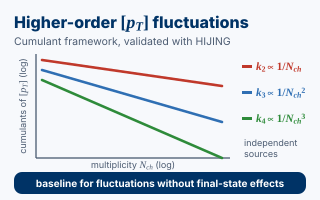
A framework and baseline for mean-pT fluctuations up to fourth order
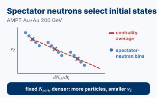
Spectator neutrons help separate initial-state geometry from random fluctuations
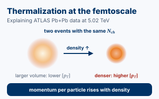
ATLAS momentum fluctuations reveal thermalization at the femtoscale
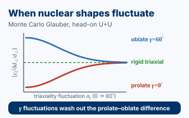
Nuclear shape fluctuations widen collision-geometry fluctuations and blur prolate–oblate differences
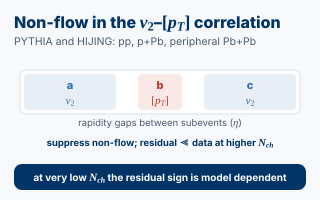
Rapidity-separated subevents suppress non-flow in flow–momentum correlations of small systems
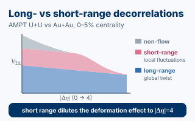